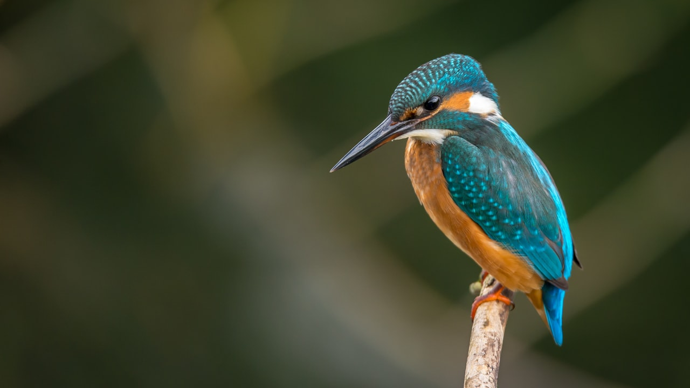

La canicule en France touche aussi nos animaux : chiens, chats, oiseaux du jardin, parfois NAC (lapins, rongeurs). Contrairement aux humains, ils ne transpirent pas tous de la meme facon et supportent mal la chaleur. Hydrater, ombrer, adapter les sorties limite les urgences veterinaires — couteuses sans assurance animaux. Demandez un devis assurance animaux · devis en ligne.


1. Chien : eau, sol brulant, promenade

Plusieurs gamelles d'eau fraiche (interieur + exterieur), jamais vide. Evitez les promenades entre 11 h et 19 h : le sol brule les coussinets. Signes d'alerte : halètement excessif, langue bleutee, vomissements, effondrement → veterinaire d'urgence. Une assurance chien avec bon plafond urgences limite la facture (perfusion, hospitalisation). Assurance chien · frais veterinaires.
2. Chat : hydratation et pieces fraiches
Le chat boit peu par nature : proposez une fontaine, nourriture humide, plusieurs points d'eau. Fermez les fenetres en plein soleil, laissez acces aux sols carreles. Un chat age ou a poil long deshydrate vite. L'assurance chat rembourse consultation et soins si coup de chaleur ou deshydratation. Assurance chat · guide complet.
3. Oiseaux : jardin, baignoire, pas de cage au soleil
Pour les oiseaux (sauvages ou de compagnie) : baignoire peu profonde ou coupelle a l'ombre, eau changee quotidiennement. Cage ou voliere : jamais en plein soleil, brumisation legere possible. Les oiseaux domestiques peuvent parfois etre couverts par une assurance NAC selon assureur — renseignez-vous via devis animaux.
4. Lapins, NAC et animaux de ferme (rappels)
Lapins et rongeurs : bouteille ou bol toujours plein, cage a l'ombre, pas de courants d'air chaud. En canicule, la mortalite monte vite sans eau. Verifiez les garanties de votre contrat animaux (plafond, franchise, delai de carence).
5. Quand consulter le veterinaire (et assurer avant l'ete)

Refus de boire, prostration, convulsions, gencives pales : appelez le vet sans attendre. Un passage aux urgences + perfusion peut depasser 300 a 800 €. Souscrire une assurance animaux avant l'ete (chien, chat, parfois NAC) evite de hesiter en cas d'urgence. Comparez plafonds et prevention : Devis assurance animaux · devis express 30 s · comment choisir.
6. Checklist canicule proprietaire d'animaux
Eau renouvelee · ombre garantie · promenades aux heures fraiches · sol teste · jamais animal en voiture · numero vet affiche · contrat animaux a jour · antiparasitaires (puces/tiques) car l'ete cumule risques.
Pourquoi l'eau est vitale pour chien, chat et oiseaux en canicule
La deshydratation precede souvent le coup de chaleur : langue pendante, lethargie, vomissements, convulsions. Les animaux ne transpirent pas comme l'humain ; le chien se rafraichit surtout par la respiration et les coussinets. Un assurance chien ou assurance chat avec bon plafond rembourse l'urgence veterinaire si la situation degenerer.
Assurance animaux : ce que la mutuelle rembourse en periode chaude
Consultation d'urgence, perfusion, hospitalisation, analyses — selon votre contrat (formule accident seule vs maladie incluse). Comparez les franchises et plafonds annuels avant l'ete : un seul passage aux urgences peut couter plusieurs centaines d'euros.
Agir vite : signes d'alerte et reflexes
- Refus de boire, gencives pales, temperature > 39,5 °C
- Eau fraiche (pas glacee), ombre, ventilateur, lingettes humides
- Ne jamais laisser un animal en voiture, meme cinq minutes
- Oiseaux : baignoire peu profonde renouvelee chaque jour
Pourquoi ce sujet compte pour votre canicule chien eau
Que vous soyez en recherche d'un devis canicule chien eau, en renouvellement ou en reaction a l'actualite, l'objectif reste le meme : comprendre vos garanties, comparer a postes equivalents et eviter les exclusions cachees. Les termes suivants reviennent souvent dans les contrats : canicule chien eau, chat chaleur hydratation, oiseaux abreuvoir canicule, assurance animaux chien chat, coup de chaleur chien assurance, mutuelle animaux canicule, NAC lapin eau chaleur, assurance chien chat devis.
Les garanties a verifier avant de signer
- Plafonds et franchises : ce qui reste a votre charge apres sinistre
- Exclusions : situations non couvertes (usure, negligence, zones a risque…)
- Delais : carence, declaration de sinistre, traitement du dossier
- Options : assistance, protection juridique, extension famille ou materiel
- Prix annuel : hors promotions — refaire un comparatif chaque annee
Comparer sans se fier au seul prix affiche
Un tarif bas peut masquer un plafond bas ou une franchise elevee. Demandez un tableau comparatif avec les memes postes : chat chaleur hydratation, oiseaux abreuvoir canicule, assurance animaux chien chat. C'est la methode utilisee par les courtiers pour aligner Allianz, AXA, April, Generali, Zéphir, Solly Azar et le reste du marche.
Erreurs frequentes a eviter
- Souscrire en ligne sans lire les exclusions ni les plafonds
- Oublier de mettre a jour le contrat apres un demenagement, divorce ou changement d'activite
- Resilier avant d'avoir une attestation de remplacement (risque de rupture de garantie)
- Ne pas declarer un sinistre dans les delais contractuels
- Ignorer la clause de beneficiaire (prevoyance, assurance-vie, deces)
Lexique et mots-cles utiles (canicule chien eau)
- canicule chien eau : terme central de cet article — a retrouver dans votre contrat ou devis
- chat chaleur hydratation : a comparer entre assureurs a garanties equivalentes
- oiseaux abreuvoir canicule : a comparer entre assureurs a garanties equivalentes
- assurance animaux chien chat : a comparer entre assureurs a garanties equivalentes
- coup de chaleur chien assurance : a comparer entre assureurs a garanties equivalentes
- mutuelle animaux canicule : a comparer entre assureurs a garanties equivalentes
- NAC lapin eau chaleur : a comparer entre assureurs a garanties equivalentes
- assurance chien chat devis : a comparer entre assureurs a garanties equivalentes
Comment obtenir un accompagnement Leads Opportunities
Notre equipe de courtiers ORIAS vous aide a comparer, resilier ou souscrire avec un langage clair. Formulaire en ligne, demande de rappel ou parcours devis selon votre besoin : canicule chien eau, sans engagement.
Consultez aussi notre catalogue complet des assurances (sante, auto, habitation, emprunteur, prevoyance, VTC, animaux) et nos pages SEO par ville pour un devis localise.
Questions frequentes
Comment comparer une offre canicule chien eau en 2026 ?
Listez vos besoins reels (budget, garanties, situation familiale ou pro), puis demandez un comparatif a garanties equivalentes. Un courtier ORIAS explique les exclusions avant de signer.
Le devis est-il gratuit et sans engagement ?
Oui chez Leads Opportunities : devis gratuit, accompagnement humain, aucune obligation de souscription immediate.
Puis-je changer d'assureur en cours d'annee ?
Selon le contrat : loi Hamon, loi Chatel, loi Lemoine (emprunteur) ou echeance annuelle. Verifiez delais de preavis et equivalence de garanties.
Quels documents preparer pour un devis ?
Contrat actuel, dernier avis d'echeance, sinistres des 3 a 5 ans, situation (locataire, emprunteur, salarie, independant).
Courtier ou comparateur en ligne : quelle difference ?
Le comparateur affiche un prix ; le courtier verifie les plafonds, franchises, delais de carence et la compatibilite avec votre profil.
Cet article Canicule remplace-t-il un conseil personnalise ?
Non : il informe sur les garanties et mots-cles utiles. Une etude personnalisee reste necessaire avant de resilier ou souscrire.